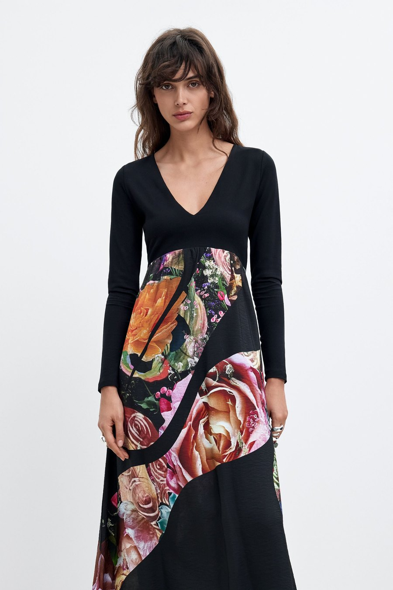
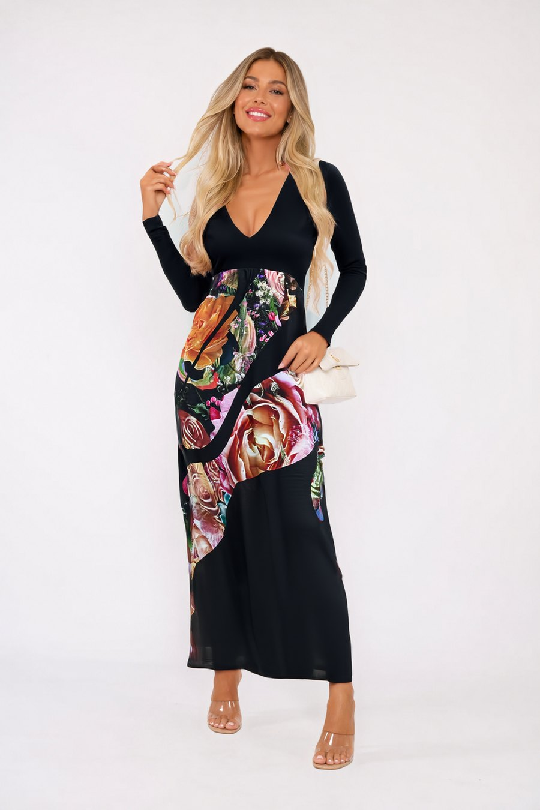
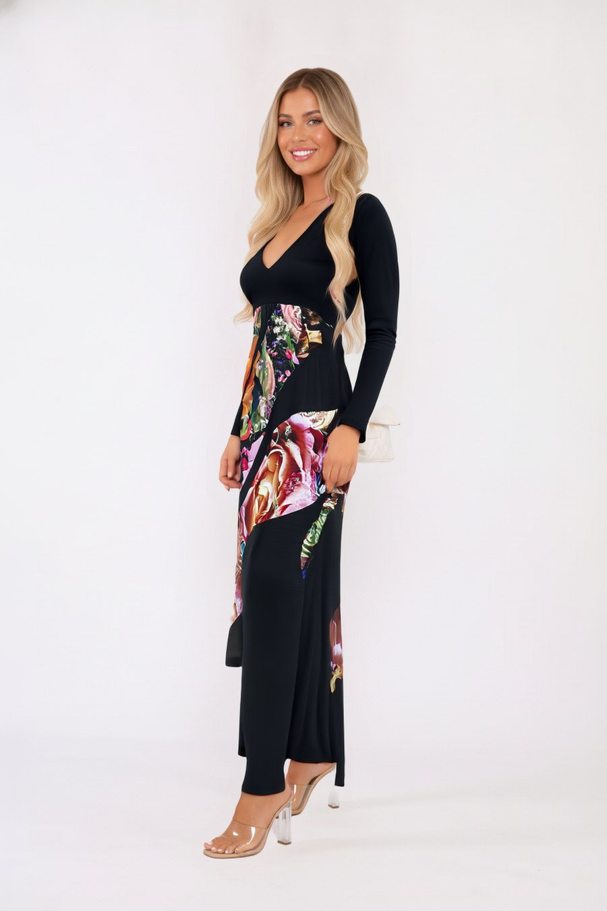
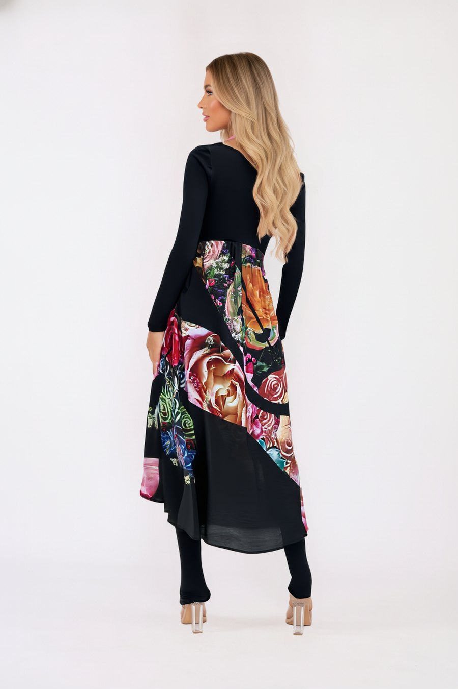

Vestido Lacroix. Partindo apenas das fotografias que já estão no site da Desigual.




Dezassete segundos, formato vertical, feito a partir das mesmas imagens. O mesmo processo serve para qualquer peça do catálogo: chega a fotografia de produto que já existe, sem casting, sem estúdio e sem direitos de imagem a tratar.
Pedro Capela · pedro@gigacorp.pt · 936 882 364
Página privada, feita só para esta conversa.